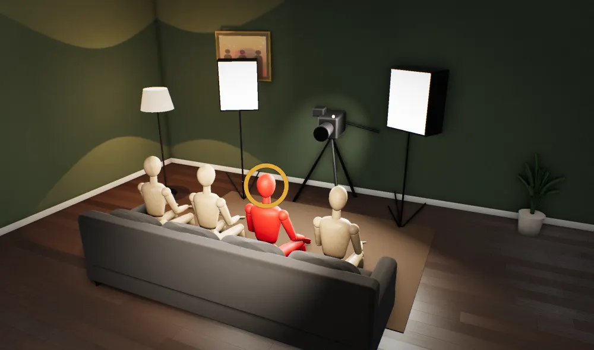
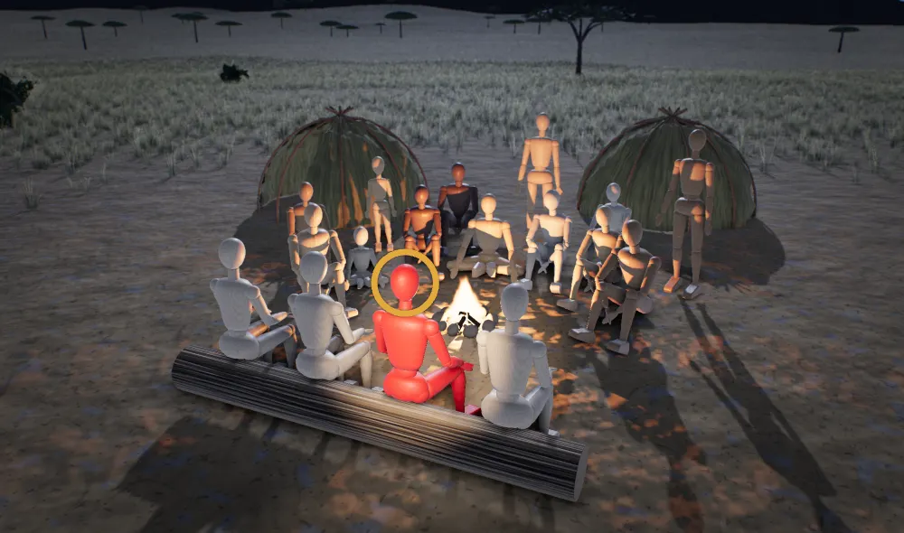

From the article

“It gave him new relevance, like the ego boost. So he didn’t really feel the need to like, ‘Oh, I have to do these compulsive sex nights to make myself feel wanted and relevant,’ I think.”
Holly Madison
“But after we started filming the show, that just stopped, which was amazing”
Holly Madison
“And it was a really weird scene and nobody liked it and everybody tried to just get it done as fast as possible.”
Holly Madison
“Nobody had to say anything. We were just like, ‘Okay, we’re not going out anymore.’”
Holly Madison
Read the article · Entertainment Weekly, 8 May 2026


Why
Hefner's sex nights
Diagnosis: an old man losing his pull with young women. Treatment given: three live-in girlfriends in his bed twice a week, until a reality show did the job and the nights stopped. Every human is built to keep breathing and leave kids behind, and for most of human history a man's standing came from a camp that knew him and could laugh him down.
Source: Holly Madison breaks down 'weird' group sex with Hugh Hefner: 'Nobody liked it', Entertainment Weekly, 8 May 2026
The mechanisms at work
Three components - desire, attraction, and pair bonding - that can work independently of each other. This system shapes much more of human behavior than reproduction itself.
Fully met by
Sexual fulfillment within pair bond + pair bond stability + reproductive success.
The researchFisher's three-system model. Independent from M2 pursuit. HPG axis, not just brain circuits.
Constantly monitors where you stand relative to others.
Fully met by
Acceptable position in a bounded, personally-known reference group on the order of ~150 (an illustrative central tendency, not a hard number; the precise figure is contested per Lindenfors 2021). Earned prestige preferred over coerced dominance.
The researchRank regulation. Shame, pride, submission, defeat, rank vigilance. Not optional - runs continuously.
Reciprocal exchange, cheater detection, coalitional identity.
Fully met by
Trusted reciprocal network with norm enforcement within a group small enough for direct reputation tracking (on the order of ~150 - the same low-hundreds ceiling that bounds M3; the precise figure is contested per Lindenfors 2021). Norm enforcement requires repeated direct interaction where defectors can be identified, remembered, and sanctioned. Beyond that ceiling, cooperation requires institutional scaffolding (formal rules, third-party enforcement, shared fictions) rather than direct reciprocity. No shared fiction at the direct-reciprocity layer.
The researchReciprocity + norm enforcement + alliance dynamics.
The claims
How strongtested many timestested onceseen in animalsargued, not yet testedcontested
- 1
Hefner's sex nights were proof he still counted, and they stopped once a TV show proved it instead.
- 2
Nobody liked the group sex at Hefner's mansion, and everybody rushed to get it over with.
Cor saysFor most of human history people could walk to another camp, so no one man held everyone's roof.
- tested onceEEA-SOC-05Membership turnover (camp dissolves and reconstitutes; most campmates change between survey waves)
- argued, not yet testedE677Woodburn 1982
- contestedEEA-SOC-10Leadership and dominance (no rulers; prestige by consent; exit available)
- 3
One rich man set the bedroom schedule because nobody around him could laugh him down.
Cor saysForager bands had no rulers, and anyone who tried to boss the group was mocked, shunned or driven out.
- tested many timesE688Boehm 1993
- argued, not yet testedE371Boehm 1999
- contestedEEA-SOC-10Leadership and dominance (no rulers; prestige by consent; exit available)
- 4
The three main girlfriends stopped going out together once filming began, and nobody had to say a word.
Which system wins
Every brain system that could explain this, oldest at the top. The longer the bar, the more of the source it explains. The longest bar is the top score.
- 500 Myr0.70
M14 Reproductive MotivationWins
Sex as a relevance display
Reproduction · 7 of 15 details · distance 3 of 3
- 500 Myr0.58
Women going where the resources are, sex with no children
Reproduction · 4 of 15 details · distance 3 of 3
- 500 Myr0.55
Porn screens and Viagra as supernormal props
Reproduction · 2 of 15 details · distance 3 of 3
- 500 Myr0.40
The pair bond as the default
Reproduction · 1 of 15 details · distance 0 of 3
- 50-100 Myr0.31
- 2-5 Myr0.30
Women's coalition with leverage
Standing · 1 of 15 details · distance 2 of 3
What is at stakeDetails explainedDistance from the camp
Why it wins. Sex as a relevance display explains 7 of the 15 details in the source, including the turning point, and sits on reproduction. It also has the top score.
Score = 0.571 x what is at stake (survival 1, reproduction 0.67, standing 0.33) + 0.286 x share of details explained + 0.143 x distance from the camp. Phylogenetic age adds no points; it orders the stack and settles near-ties.
The 15 details
- D1 Group sex was "required"; EW calls him an octogenarian "in his 80s" while its body text says late 70s.
- D2 Twice a week, Wednesday and Friday: a nightclub first, then sex at the mansion.
- D3 Three main girlfriends, with "multiple other women" invited in.
- D4 Madison was "No. 1 girl" for seven years; the senior girlfriends left the bedroom duties to the newbies.
- D5 "Nobody liked it and everybody tried to just get it done as fast as possible"; they took turns and faked it with each other.
- D6 Giant screens of porn played throughout.
- D7 turning point Once filming for The Girls Next Door started, "that just stopped".
- D8 The show broke E! ratings records and revived a 50-year-old brand.
- D9 Madison: he was "high off the show", it gave him "new relevance", so he no longer needed "these compulsive sex nights to make myself feel wanted and relevant".
- D10 When he wanted sex, other girlfriends around the mansion "could perform the job".
- D11 The three main girlfriends quit without discussing it: "Nobody had to say anything."
- D12 One-on-one nights were a movie, a crossword and a book: "very suburban".
- D13 Madison is "now a mother of two".
- D14 Photos: an old man among near-identical young blondes in matching robes, a "HEF" blanket across their laps.
- D15 Framing: "X-rated details", "weird", "method to the madness?", and a related story on "Viagra central".
What they say it is
They say
Madison says Hefner did compulsive sex nights to feel wanted and relevant until the show's ego boost ended them; EW sells it as a weird, X-rated scene.
“…it was a really weird scene and nobody liked it”
Holly Madison and Entertainment Weekly
What it really is
An old man whose pull with young women was fading paid for proof he still counted, and a hit show gave him that proof for less.
What they leave out.
Madison's account is right; the outlet's weird-scene framing leaves out why the women went along, which is that one man held their roof, rank and fame and nobody around him could check him.
The rest
The sex nights stopped the moment the cameras started, and a sex drive doesn't quit because E! calls. Madison says it herself: he did those nights to feel wanted and relevant, and the hit show handed him that for far less effort. Across non-industrial societies, higher-status men had more children, so a man who reads his pull with women as fading shows off the young women he can get.
The women ran the same sum from the other side. He owned the house, picked the girlfriends and required club and sex every Wednesday and Friday, and over the years newer women were brought into his bedroom and took most of the bedroom duties. Madison never says why they went along. Our reading is that their roof and her No. 1 title all ran through him, which made going along the cheapest route, and everybody rushed to get it done. Madison took part in those nights for years, and in the later rift she says she called Wilkinson out over text; owning that to the people involved is the way back. For most of human history a band had no rulers, anyone could move to another camp, and a man who tried to boss everyone got mocked, shunned or left behind.
Once filming began, the three stopped going out together, and nobody had to say a word. The newer women took what was left, and after the show ended Madison and Wilkinson fell out and have not spoken in over a decade.
So now what?
- Keep a place to live and an income that don't run through the person you sleep with.
- Live near friends and family who will back you and take you in if you say no.
- Line up with the others facing the same demand, so a refusal comes from a group instead of one person.
On the line
How do we know?
Claim by claim
The required sex nights stopped once filming of the show began, and Madison credits the show's new relevance and ego boost.
Across non-industrial societies, higher-status men had more children.
Forager bands had no rulers, and the group acting together checked anyone who tried to dominate.
- tested many timesE688Boehm 1993E372Boehm 1999
- argued, not yet testedE371Boehm 1999
- contestedEEA-SOC-10Leadership and dominance (no rulers; prestige by consent; exit available)
People in mobile forager bands could move to another camp without economic penalty, and camps reshuffled often.
- tested many timesE684Bird et al. 2019
- tested onceEEA-SOC-05Membership turnover (camp dissolves and reconstitutes; most campmates change between survey waves)
- argued, not yet testedE677Woodburn 1982
Lasting standing in forager bands came from prestige that lasted only while others chose to follow.
- tested many timesE689Garfield et al. 2019
- contestedEEA-SOC-10Leadership and dominance (no rulers; prestige by consent; exit available)
A camp kept a running record of each member through daily talk among people who knew them.
- tested many timesE373Boehm 1999
- tested onceE720Wiessner 2014
- argued, not yet testedEEA-SOC-09Behavioral observability / reputation visibility
In a model of two forager populations, equal say for men and women over where couples live fits the camps seen.
- tested onceE687Dyble et al. 2015
The article gives Hefner's age at the time as both 'late 70s' and 'in his 80s'.
What cuts against it
Reproductive success mixes mating, fertility and child survival. A later study of foraging performance disputes the forager evidence, and whether big-game hunting was a status contest or family provisioning is itself contested.
Most societies on record permitted polygynous marriage, so a high-status man with several partners is not in itself a mismatch. What differs is the lack of a band that can level him, the lack of exit for the women, and the lack of any bond or children.
Late Pleistocene social life was probably more varied than the egalitarian band model, with some forager groups showing inequality and seasonal hierarchy. This limits the 'no rulers' baseline but leaves the group check on dominators standing.
Sex differences in jealousy and mate-preference measures weaken in real behaviour and vary with local economies, so reading the women's reaction as a fixed female pattern is limited.
Not in Cor yet
Polygyny among mobile foragers was uncommon, and few men had more than two wives at once.
Marlowe 2004
Grades are Cor's. Every id opens its Cor page.
Sources
- Holly Madison breaks down 'weird' group sex with Hugh Hefner: 'Nobody liked it'. Entertainment Weekly, 8 May 2026. The source decoded here.
- Apostolou (2007). Sexual selection under parental choice: the role of parents in the evolution of human mating.
- Bird et al. (2019). Variability in the organization and size of hunter-gatherer groups: Foragers do not live in small-scale societies.
- Boehm (1993). Egalitarian behavior and reverse dominance hierarchy.
- Boehm (1999). Hierarchy in the Forest: The Evolution of Egalitarian Behavior.
- Dyble et al. (2015). Sex equality can explain the unique social structure of hunter-gatherer bands.
- Eastwick et al. (2014). The predictive validity of ideal partner preferences: A review and meta-analysis.
- Garfield et al. (2019). The evolutionary anthropology of political leadership.
- Harris (2003). A review of sex differences in sexual jealousy, including self-report data, psychophysiological responses, interpersonal violence, and morbid jealousy.
- Hawkes (1993). Why hunter-gatherers work: An ancient version of the problem of public goods.
- Henrich et al. (2012). The puzzle of monogamous marriage.
- Kelly (2013). The Lifeways of Hunter-Gatherers: The Foraging Spectrum.
- Singh & Glowacki (2022). Human social organization during the Late Pleistocene: Beyond the nomadic-egalitarian model.
- Smith (2004). Why do good hunters have higher reproductive success?.
- von Rueden & Jaeggi (2016). Men's status and reproductive success in 33 nonindustrial societies: Effects of subsistence, marriage system, and reciprocal exchange.
- von Rueden et al. (2011). Why do men seek status? Fitness payoffs to dominance and prestige.
- Wiessner (2014). Embers of society: Firelight talk among the Ju/'hoansi Bushmen.
- Wood & Eagly (2002). A cross-cultural analysis of the behavior of women and men: Implications for the origins of sex differences.
- Woodburn (1982). Egalitarian societies.